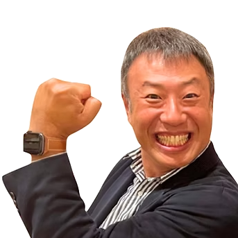
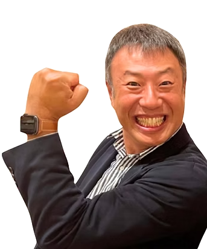

指示待ち若手が、自ら動き出す。
組織の空気を変え、
人が育つ「土壌」をつくる。
若手・Z世代が本音を話し、挑戦へと一歩踏み出す背中を押す「せなドン」スタイル研修。
一方通行の座学ではなく、深い対話と発問で「ココロ動き出す実践型ワークショップ」を岡山から全国へお届けします。

北島 一道 （きたじま もとみち）
「きたじまのき」代表 / ファシリテーター
こんな「育成と関係性の壁」に悩んでいませんか？
チェックを入れて、御社の組織コミュニケーション状態をセルフチェックしてみましょう。
若手が動かないのは、決して「やる気がないから」ではありません。
「安心して本音を出せる心理的安全性」と、「自分の頭で考え、一歩踏み出す背中の押し方」を知らないだけです。
「聴き方」と「伝え方」を整えるだけで、社内のすれ違いはほどけ、人は驚くほど自走し始めます。
なぜ、きたじまのきの研修は
「人が変わり、組織が動く」のか？
他の大手研修会社や理論中心のセミナーとは一線を画す、3つの独自価値があります。
25年・7,200人に向き合った
「圧倒的な教育現場知」
全日制・定時制高校の教壇で25年間、不登校や将来に悩む生徒たちと本気で向き合い続けてきたからこそ、現代の若手・Z世代が抱える「自信のなさ」「承認欲求」「本当のやる気の引き出し方」を熟知しています。
温かさと熱量のハイブリッド
「せなドン」スタイル
精神論や厳しい説教は一切行いません。まずは受講生の自己肯定感と心理的安全性を100%確保した上で、「変わりたい」「やってみたい」という心のスイッチを力強く、温かくドン！と後押しします。
その場の空気で創り出す
「ジャズのようなライブ対話」
あらかじめ用意したスライドを一方的に読み上げる講義ではありません。受講者の表情や空気感を瞬時に汲み取り、深い問いかけ（発問）を通して「自分の言葉で語り、決断する」場を創り出します。
きたじまのき ４つの約束（理念・クレド）
参加者が笑顔になる学び
心から楽しめ、安心して本音を出せる場をお届けします。
組織の「ど真ん中」を尊重
企業の想いや文化を深く理解し、完全オーダーメイドします。
唯一無二の研修
その場のメンバーだからこそ生まれる化学反応を大切にします。
学びの先まで伴走
「やりっぱなし」にせず、離職防止や行動変容まで応援します。
組織の課題に合わせた実践プログラム
単発のワークショップから3〜6ヶ月の伴走型まで、目的に応じて柔軟に設計いたします。
指示待ちを卒業し、周囲から愛され自走する社員になる
「言われたことしかやらない」「先輩に質問できない」若手が、自らの意志で行動を起こすマインドと技術を身につけます。
主なワークショップ内容（半日：3時間 〜 1日：6時間）
- Step 1. 心理的安心のアイスブレイク：弱音や不安を安心して共有できる場づくり
- Step 2. 「聴く」コミュニケーション：先輩・上司の意図を正確に捉える傾聴の作法
- Step 3. 「伝える」コミュニケーション：伝わらないストレスをなくす報連相と意見の出し方
- Step 4. 一歩踏み出す「せなドン」宣言：明日から現場で実践するマイアクションを自ら決断
若手の本音を引き出し、自発性を育てる「伴走型リーダーシップ」
「どう声をかけたらいいか分からない」と悩むリーダーが、問いかけ（発問）と傾聴でチームを引っ張る力を身につけます。
主なワークショップ内容（半日：3時間 〜 1日：6時間）
- Step 1. 現代の若手心理の構造理解：教員25年の現場知から紐解くZ世代の本音
- Step 2. 答えを与えない「発問（問いかけ）」技術：若手に考えさせ、気づかせる質問力
- Step 3. 心理的安全性を高めるフィードバック：叱責ではなく成長を促す伝え方
- Step 4. チーム対話のファシリテーション：会議で意見が活発に飛び交う場づくりの実践
言いたいことが言える、助け合いが自然に生まれる職場づくり
世代間や部署間のギクシャクした関係をほどき、お互いの違いを面白がりながら協働できる強いチームの土壌をつくります。
主なワークショップ内容（半日：3時間）
- Step 1. 組織の健康診断ワーク：うちのチームの「関係の質」を可視化する
- Step 2. 自己理解と他者理解：お互いの「大切にしている価値観」を共有する
- Step 3. 違いを力に変えるコミュニケーション：異なる強みを掛け合わせる対話実習
- Step 4. チームの「共通ルール」策定：明日から職場で実践する合意形成
【3〜6ヶ月】若手定着・自走化プロジェクト（伴走型）
「研修で学んで終わり」にしない。現場での実践、個別1on1、効果検証を組み合わせ、組織の行動変容を確実にするプログラムです。
伴走の流れとサポート体制
- 月1回の集合ワークショップ：段階的にスキルとマインドをステップアップ
- 現場実践課題（アクションプラン）：学んだことを翌週の職場で実践
- 現場リーダーとの個別1on1：育成の悩みや進捗を北島が直接サポート
- 経営陣・人事への定着レポート：組織の変化を可視化して共有

48歳で未経験からサックスに挑戦
「人が変わる瞬間」を、
誰よりも信じている。
「上から押し付けられた正論やルールでは、人の心は1ミリも動かない。」
岡山県の公立高校で体育教員として歩み始めた20代。全日制、そして定時制高校の教壇に立ち、のべ7,200人を超える若者たちと真正面から向き合ってきました。
不登校や人間関係に悩む生徒たちと過ごす中で気づいたのは、人が自ら動き出すのは「自分の存在を丸ごと受け止められた」と感じ、「あなたならできる」と信じて背中を力強く押されたときだということでした。
25年間の現場知を社会に届けるため独立。企業の現場でもやることは同じです。一方的に教え込むのではなく、対話で引き出し、最後の一歩を温かくドン！と後押しする。人が自走し、笑顔あふれる組織を日本中に増やしていきたいと願っています。
経歴・実績
- 岡山県内公立高等学校 体育科教員（25年間勤務・生徒指導/進路指導）
- 「きたじまのき」代表 / 次世代リーダー育成コーチ（個人事業主4年目）
- 地元大手・中堅製造業、IT企業、医療法人、公立学校等での登壇実績多数
- 著書出版、地元ラジオ出演、教育・人材ビジネスメディア取材多数
受講者満足度 98.2% ── 現場に生まれた変化の声
導入いただいた企業様・受講生のリアルな感想をご紹介します。
「若手が翌日から自発的に挨拶・質問するようになり、3年連続リピートしています」
これまでの研修は座学中心で、若手の反応もイマイチでした。北島先生のワークショップは開始15分で会場の空気が激変。若手がイキイキと自分の言葉で話し始めました。1年後の若手離職率もゼロを維持できており、今や当社の必須研修です。
「『こんな大人に出会いたかった』。仕事への迷いが消え、背中を押してもらえました」
職場での報連相やコミュニケーションにずっと自信が持てず、抱え込んでいました。きたじー先生は自分の悩みを否定せず受け止めてくれた上で、力強く背中を押してくれました。「明日から自分から話しかけてみよう」と前向きになれました。
「ハラスメントを恐れて萎縮していた管理職が、自信を持って若手を育成できるように」
若手への声かけに悩んでいた中堅層が、「問いかけ」と「傾聴」の手法を学んだことで、職場の空気が一気に明るくなりました。会議でも若手から自発的な改善提案が出るようになり、チームの生産性が上がっています。
明瞭で安心の料金プラン
御社の規模・目的・ご予算に合わせて最適なプランをご提案いたします。
半日実践ワークショップ
所要時間：最大3時間
- ✓ まずは職場の空気を変えたい企業様向け
- ✓ 心理的安全性の醸成・対話の基礎
- ✓ 受講者アンケート集計・簡易フィードバック
- ✓ 全国出張・オンライン対応（旅費交通費実費）
3ヶ月 伴走型若手自走プログラム
期間：3ヶ月間（月1回研修＋実践）
- ✓ 集合研修（月1回・計3回実施）
- ✓ 職場での実践アクション課題伴走
- ✓ 現場リーダー向け育成アドバイス1on1
- ✓ 経営陣・人事への定着状況レポート
- ✓ 早期離職防止・自走化に最も効果的
組織開発・人材育成顧問
契約期間：6ヶ月〜（年間契約推奨）
- ✓ 月次定例ミーティング・育成施策の壁打ち
- ✓ 若手・中堅リーダーの社外相談窓口（1on1）
- ✓ 社内研修の企画・設計サポート
- ✓ 人事専任者がいない中小企業の伴走支援
教員向け対話力研修・生徒向け講演会
教員のファシリテーション研修、生徒向け進路・動機づけ講演などを承っています。
無料オンラインサロン「きたじまのもり」
音声配信・ラジオ・コラムなど、毎日楽しく学べるコミュニティを運営しています。
よくあるご質問
ご依頼にあたっていただく主な質問をまとめました。
はい、全国どこへでも出張対応いたします（交通費・宿泊費は実費精算）。また、Zoom等を活用した完全オンラインでの実施や、対面とオンラインを組み合わせたハイブリッド形式にも多数の実績がございます。
5〜10名の少人数ワークショップから、数十名規模の階層別研修、100名以上の全社講演会まで対応可能です。深い対話と個人の気づきを最大化するためには、15〜25名前後のグループワークを特にお勧めしています。
もちろんです。「きたじまのき」では既成のマニュアルをそのまま行う研修はいたしません。事前のヒアリングで御社の理念、職場のリアルなお困りごと、目指すゴールをお伺いし、完全オーダーメイドで設計します。
大歓迎です。初回30分のオンライン無料相談（Zoom等）を随時承っております。「現状の職場の空気をどうにかしたい」「他社での事例を知りたい」という情報交換・課題整理の場として気軽にご活用ください。無理な勧誘は一切ございません。
あなたの組織の「未来」を、一緒に動かしましょう
まずはお気軽にご相談・資料請求をお申し込みください。48時間以内に代表・北島より直接ご連絡いたします。